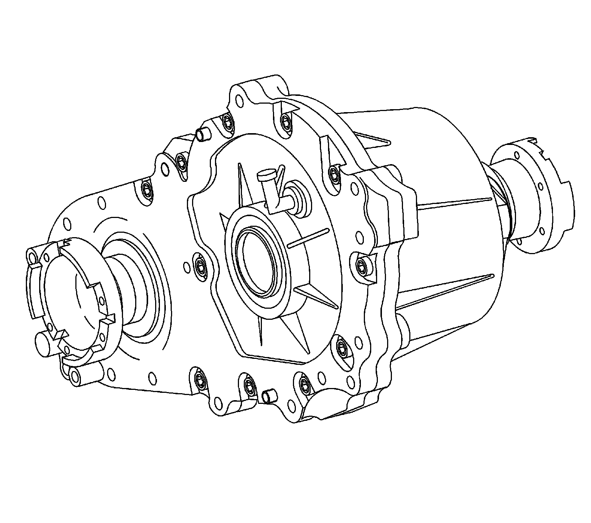

Transfer Case: Description and Operation
Transfer Case Description and Operation
Transfer Case Description and Operation:

The Borg Warner (BW) model 4479, transfer case is a 1-speed, full-time, all wheel drive (AWD), transfer case. The transfer case provides power to both axles through an external planetary type differential, which has 2 different sets of pinion gears. The planetary differential provides a 40/60 torque split, front/rear, full-time. This means both axles are constantly being driven for maximum traction in all conditions. The BW 4479 design of the planetary differential allows the use with the vehicle stability enhancement system (VSES) vehicles. The VSES takes use of the planetary differential by applying braking to a tire that has less traction and dividing the engine torque to the other axle.
Reduced driveline backlash is achieved through press fit interfaces of the lower sprocket, sun gear, and input shaft assembly.
The BW 4479 case halves are high-pressure, die-cast aluminum. Ball bearings support the input shaft, the front output shaft, and the rear output shaft. The transfer case requires manual transmission fluid GM P/N 88861800 (Canadian P/N 88861801), which is red in color.